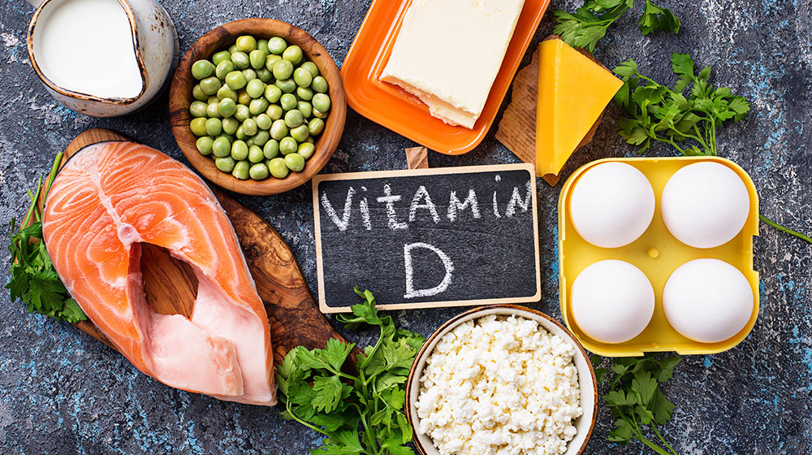
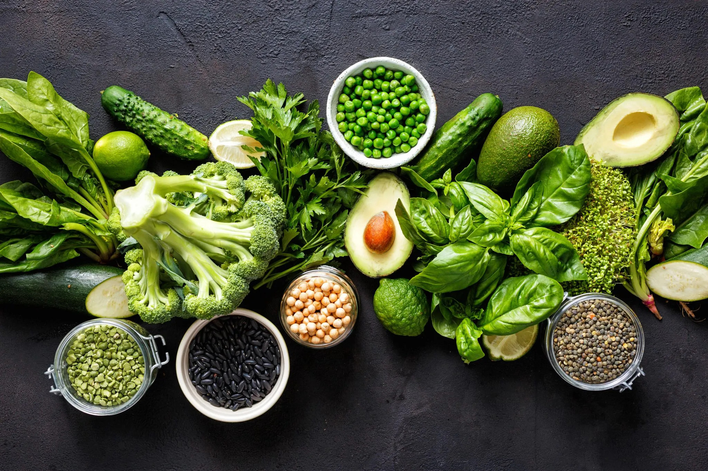
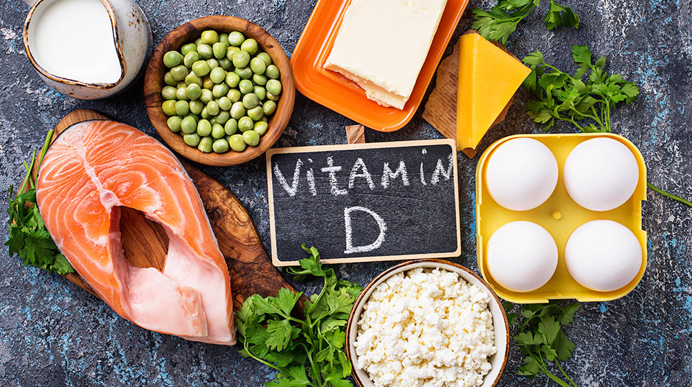
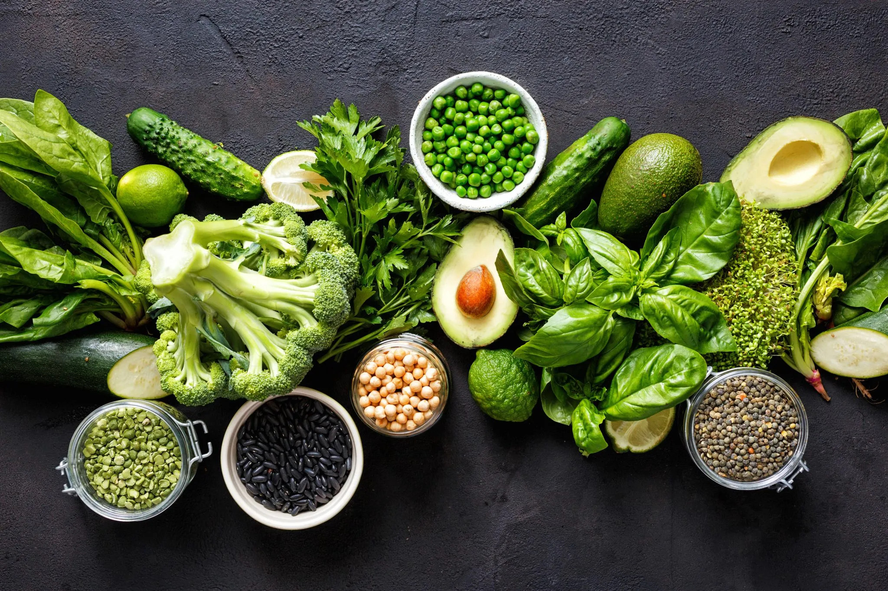

Nutrientes energéticos:
fornecem energia às células: Carboidratos, Lipídios.Carboidratos
Simples (açúcares): Facilmente digeridos, geram um pico glicêmico no sangue, liberando uma grande “dose” de energia, que quando não utilizada, faz com que o alimento vire reserva de gordura no corpo. Após este pico glicêmico, ocasiona-se fome entre as refeições. Exemplos de alimentos: Doces, mel, farinha branca, refrigerante etc
Complexos:Possuem baixo índice glicêmico e são absorvidos lentamente, onde essa digestão mais lenta utiliza a energia dos lipídios (gorduras), ocasionando a perda de peso. Ricos em fibras e vitaminas, nos oferecem uma melhor saciedade. Presentes em alimentos como: Batata doce,mandioca, cereais etc
Proteínas
Macromoléculas formadas por aminoácidos, necessárias para que o organismo produza partes essenciais de nosso corpo, como músculos e hormônios. Possuem como função: Produção de massa muscular, produção de anticorpos (células de defesa são produzidas a partir das proteínas), equilíbrio de hormônios, transportar oxigênio
As proteínas estão relacionadas ao ganho de massa muscular, pois para que os músculos fiquem mais fortes, as proteínas precisam ser reconstruídas. Assim como também se relacionam com a perda de peso, através de dietas ricas desses nutrientes. Possuem digestão lenta, fornecendo um efeito maior de saciedade assim como alguns carboidratos. Uma dieta sem a inclusão desses nutrientes pode causar anemia, falta de concentração, perda muscular ocasionando um metabolismo mais lento e dificuldade em cicatrizações, pois as mesmas ajudam na reparação dos tecidos
Lipídios:
Biomoléculas insolúveis em água que possuem como função: Reserva de energia (utilizadas em momentos de necessidade pelo organismo), síntese de moléculas orgânicas e membranas celulares e a absorção de vitaminas. Alimentos onde encontram-se: Peixe, Ovo, Manteiga, Abacate, azeite de oliva
Nutrientes construtores:
Participam na constituição de enzimas, anticorpos e hormônios como as proteínas. Englobam as vimaninas no geral:


 


